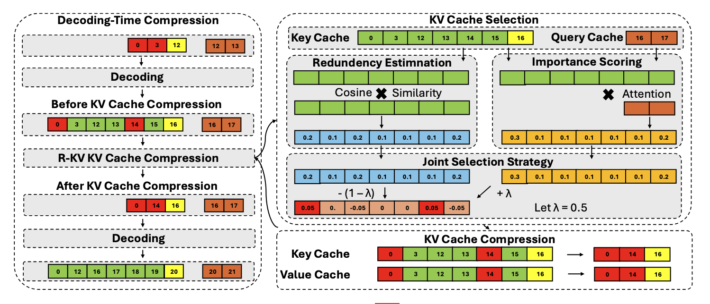
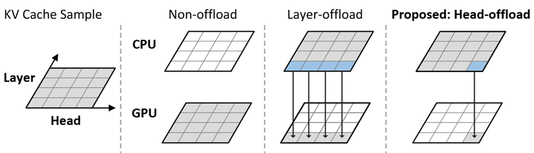
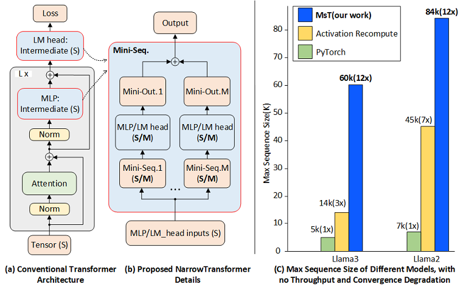
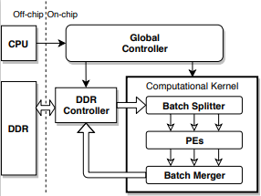

Research

R-KV: Redundancy-aware KV Cache Compression for Reasoning Models
Zefan Cai, Wen Xiao, Hanshi Sun, Cheng Luo, Yikai Zhang, Ke Wan, Yucheng Li, Yeyang Zhou, Li-Wen Chang, Jiuxiang Gu, Zhen Dong, Anima Anandkumar, Abedelkadir Asi, Junjie Hu
under review

HeadInfer: Memory-Efficient LLM Inference by Head-wise Offloading
Cheng Luo, Zefan Cai, Hanshi Sun, Jinqi Xiao, Bo Yuan, Wen Xiao, Junjie Hu, Jiawei Zhao, Beidi Chen, Anima Anandkumar
under review

MINI-SEQUENCE TRANSFORMER: Optimizing Intermediate Memory for Long Sequences Training
Cheng Luo, Jiawei Zhao, Zhuoming Cheng, Beidi Cheng, Anima Anandkumar
accpeted by NeurIPS 2024

RTP: Rethinking Tensor Parallelism with Memory Deduplicationn
Cheng Luo, Tianle Zhong, Geoffrey Fox
Arxiv 2023

Towards efficient deep neural network training by FPGA-based batch-level parallelism
Cheng Luo, Man-Kit Sit, Hongxiang Fan, Shuanglong Liu, Wayne Luk, Ce Guo
FCCM 2020